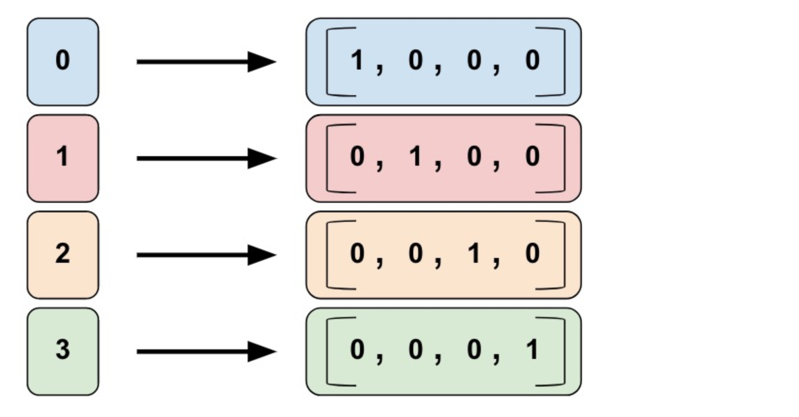

7.2 tf.data与tf.feature_column
学习目标
- 目标
- 知道tf.dataset详细使用
- 应用
- 无
7.2.1 tf.data
使用 tf.data API 可以轻松处理大量数据、不同的数据格式以及复杂的转换。tf.data API 在 TensorFlow 中引入了两个新的抽象类：
tf.data.Dataset表示一系列元素，其中每个元素包含一个或多个Tensor对象。：- 创建来源（例如
Dataset.from_tensor_slices()），以通过一个或多个tf.Tensor对象构建数据集。 - 应用转换（例如
Dataset.batch()），以通过一个或多个tf.data.Dataset对象构建数据集。 - dataset如果用于tf.estimator， 必须是字典形式的feature, label
- 创建来源（例如
tf.data.Iterator提供了从数据集中提取元素的主要方法。Iterator.get_next()返回的操作会在执行时生成Dataset的下一个元素，并且此操作通常充当输入管道代码和模型之间的接口。
我们建议使用 TensorFlow 的 Dataset API，它可以解析各种数据。概括来讲，Dataset API 包含下列类：

Dataset- 包含创建和转换数据集的方法的基类。您还可以通过该类从内存中的数据或 Python 生成器初始化数据集。TextLineDataset- 从文本文件中读取行。TFRecordDataset- 从 TFRecord 文件中读取记录。FixedLengthRecordDataset- 从二进制文件中读取具有固定大小的记录。Iterator- 提供一次访问一个数据集元素的方法。
1 使用机制
1、要启动输入管道，您必须定义来源。例如，要通过内存中的某些张量构建
Dataset，可以使用tf.data.Dataset.from_tensor_slices()。或者，如果输入数据以推荐的 TFRecord 格式存储在磁盘上，那么您可以构建tf.data.TFRecordDataset。2、一旦有了
Dataset对象，可以将其转换为新的Dataset，方法是链接tf.data.Dataset对象上的方法调用。例如，您可以应用单元素转换，例如Dataset.map()（为每个元素应用一个函数），也可以应用多元素转换（例如Dataset.batch()）。3、如果需要获取
Dataset中的值。通过此对象，可以一次访问数据集中的一个元素（通过调用Dataset.make_one_shot_iterator()），Iterator.get_next()。
2 tf.data.Dataset.from_tensor_slices获取数据
一个数据集包含多个元素，每个元素的结构都相同。一个元素包含一个或多个 tf.Tensor 对象，这些对象称为组件。可以通过 Dataset.output_types 和 Dataset.output_shapes 属性检查数据集元素各个组件的推理类型和形状。这些属性的嵌套结构映射到元素的结构，此元素可以是单个张量、张量元组，也可以是张量的嵌套元组。例如：
dataset1 = tf.data.Dataset.from_tensor_slices(tf.random_uniform([4, 10]))
print(dataset1.output_types)
print(dataset1.output_shapes)
dataset2 = tf.data.Dataset.from_tensor_slices(
(tf.random_uniform([4]),
tf.random_uniform([4, 100], maxval=100, dtype=tf.int32)))
print(dataset2.output_types)
print(dataset2.output_shapes)
dataset3 = tf.data.Dataset.zip((dataset1, dataset2))
print(dataset3.output_types)
print(dataset3.output_shapes)
为元素的每个组件命名通常会带来便利性，例如，如果它们表示训练样本的不同特征。除了元组之外，还可以使用 collections.namedtuple 或将字符串映射到张量的字典来表示 Dataset 的单个元素
dataset = tf.data.Dataset.from_tensor_slices(
{"a": tf.random_uniform([4]),
"b": tf.random_uniform([4, 100], maxval=100, dtype=tf.int32)})
print(dataset.output_types)
print(dataset.output_shapes)
3 创建迭代器
构建了表示输入数据的 Dataset 后，下一步就是创建 Iterator 来访问该数据集中的元素。
单次迭代器是最简单的迭代器形式，仅支持对数据集进行一次迭代，不需要显式初始化。单次迭代器可以处理基于队列的现有输入管道支持的几乎所有情况，但它们不支持参数化。以 Dataset.range() 为例：
dataset = tf.data.Dataset.range(100)
iterator = dataset.make_one_shot_iterator()
next_element = iterator.get_next()
for i in range(100):
value = sess.run(next_element)
注：要在
input_fn中使用Dataset（input_fn 属于tf.estimator.Estimator），只需返回Dataset即可，框架将负责创建和初始化迭代器。
4 读取输入数据
读取现有数组数据
features：Python 字典，其中：- 每个键都是特征的名称。
- 每个值都是包含此特征所有值的数组。
label- 包含每个样本的标签值的数组。
features = {'SepalLength': np.array([6.4, 5.0]),
'SepalWidth': np.array([2.8, 2.3]),
'PetalLength': np.array([5.6, 3.3]),
'PetalWidth': np.array([2.2, 1.0])}
labels = np.array([2, 1])
在函数中调用
def train_input_fn(features, labels, batch_size):
"""
"""
dataset = tf.data.Dataset.from_tensor_slices((dict(features), labels))
dataset = dataset.shuffle(1000).repeat().batch(batch_size)
return dataset
dataset.make_one_shot_iterator().get_next()
上面的代码段会将 features 和 labels 数组作为 tf.constant() 指令嵌入在 TensorFlow 图中。这样非常适合小型数据集，但会浪费内存，因为会多次复制数组的内容，但是不能达到 tf.GraphDef协议缓冲区的 2GB 上限。
- 读取CSV、文本数据
filenames = ["1.txt", "2.txt"]
dataset = tf.data.TextLineDataset(filenames)
默认情况下，TextLineDataset 会生成每个文件的每一行。所以通过长会使用 Dataset.map() 预处理数据
Dataset.map(f) 转换通过将指定函数 f 应用于输入数据集的每个元素来生成新数据集。
4 Dataset的转换（transformations）
当使用Dataset.map()，Dataset.flat_map()，以及Dataset.filter()转换时，它们会对每个element应用一个function
dataset1 = dataset1.map(lambda x: ...)
- 读取TFRecord 数据
- TFRecords部分讲解
5 训练的数据集大小指定
tf.data API 提供了两种主要方式来处理同一数据的多个epoch。要迭代数据集多个周期，最简单的方法是使用 Dataset.repeat() 转换。例如，要创建一个将其输入重复 10 个周期的数据集：
dataset = dataset.map(...)
dataset = dataset.repeat(10)
dataset = dataset.batch(32)
如果 Dataset.repeat()中没有参数 转换将无限次地重复输入。
- 随机重排输入数据
Dataset.shuffle() 转换会使用算法随机重排输入数据集：它会维持一个固定大小的缓冲区，并从该缓冲区统一地随机选择下一个元素。
dataset = dataset.map(...)
dataset = dataset.shuffle(buffer_size=10000)
dataset = dataset.batch(32)
dataset = dataset.repeat()
7.2.2 特征处理tf.feature_colum
特征列
Estimator 的 feature_columns 参数来指定模型的输入。特征列在输入数据（由input_fn返回）与模型之间架起了桥梁。要创建特征列，请调用 tf.feature_column 模块的函数。本文档介绍了该模块中的 9 个函数。如下图所示，除了 bucketized_column 外的函数要么返回一个 Categorical Column 对象，要么返回一个 Dense Column 对象。

要创建特征列，请调用 tf.feature_column 模块的函数。本文档介绍了该模块中的 9 个函数。如下图所示，除了 bucketized_column 外的函数要么返回一个 Categorical Column 对象，要么返回一个 Dense Column 对象。

1，数值列（tf.feature_column.numeric_column）
2，分桶列（tf.feature_column.bucketized_column）
3，分类标识列（tf.feature_column.categorical_column_with_identity）
4，分类词汇列（tf.feature_column.categorical_column_with_vocabulary_list 或者 tf.feature_column.categorical_column_with_vocabulary_file）
5，经过哈希处理的列（tf.feature_column.categorical_column_with_hash_bucket）
6，组合列（tf.feature_column.crossed_column）
7，指标列（tf.feature_column.indicator_column）
8，嵌入列（tf.feature_column.embedding_column）
- Numeric column（数值列）
Iris 分类器对所有输入特徵调用 tf.feature_column.numeric_column 函数：SepalLength、SepalWidth、PetalLength、PetalWidth
tf.feature_column 有许多可选参数。如果不指定可选参数，将默认指定该特征列的数值类型为 tf.float32。
numeric_feature_column = tf.feature_column.numeric_column(key="SepalLength")
- Bucketized column（分桶列）
通常，我们不直接将一个数值直接传给模型，而是根据数值范围将其值分为不同的 categories。上述功能可以通过 tf.feature_column.bucketized_column 实现。以表示房屋建造年份的原始数据为例。我们并非以标量数值列表示年份，而是将年份分成下列四个分桶：

模型将按以下方式表示这些分桶：
| 日期范围 | 表示为… |
|---|---|
| < 1960 年 | [1, 0, 0, 0] |
| >= 1960 年但 < 1980 年 | [0, 1, 0, 0] |
| >= 1980 年但 < 2000 年 | [0, 0, 1, 0] |
| >= 2000 年 | [0, 0, 0, 1] |
# 首先，将原始输入转换为一个numeric column
numeric_feature_column = tf.feature_column.numeric_column("Year")
# 然后，按照边界[1960,1980,2000]将numeric column进行bucket
bucketized_feature_column = tf.feature_column.bucketized_column(
source_column = numeric_feature_column,
boundaries = [1960, 1980, 2000])
- Categorical identity column（类别标识列）
输入的列数据就是为固定的离散值，假设您想要表示整数范围 [0, 4)。在这种情况下，分类标识映射如下所示：

identity_feature_column = tf.feature_column.categorical_column_with_identity(
key='my_feature_b',
num_buckets=4) # Values [0, 4)
- Categorical vocabulary column（类别词汇表）
我们不能直接向模型中输入字符串。我们必须首先将字符串映射为数值或类别值。Categorical vocabulary column 可以将字符串表示为one_hot格式的向量。

vocabulary_feature_column =
tf.feature_column.categorical_column_with_vocabulary_list(
key=feature_name_from_input_fn,
vocabulary_list=["kitchenware", "electronics", "sports"])
- Hashed Column（哈希列）
处理的示例都包含很少的类别。但当类别的数量特别大时，我们不可能为每个词汇或整数设置单独的类别，因为这将会消耗非常大的内存。对于此类情况，我们可以反问自己：“我愿意为我的输入设置多少类别？
hashed_feature_column =
tf.feature_column.categorical_column_with_hash_bucket(
key = "some_feature",
hash_bucket_size = 100) # The number of categories

- 其它列处理
- Crossed column（组合列）,深度排序算法进行讲解